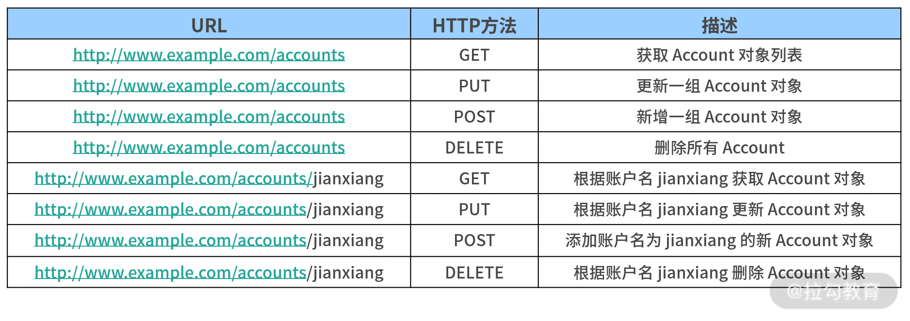

- 00 开篇词 从零开始：为什么要学习 Spring Boot？.md
- 01 家族生态：如何正确理解 Spring 家族的技术体系？.md
- 02 案例驱动：如何剖析一个 Spring Web 应用程序？.md
- 03 多维配置：如何使用 Spring Boot 中的配置体系？.md
- 04 定制配置：如何创建和管理自定义的配置信息？.md
- 05 自动配置：如何正确理解 Spring Boot 自动配置实现原理？.md
- 06 基础规范：如何理解 JDBC 关系型数据库访问规范？.md
- 07 数据访问：如何使用 JdbcTemplate 访问关系型数据库？.md
- 08 数据访问：如何剖析 JdbcTemplate 数据访问实现原理？.md
- 09 数据抽象：Spring Data 如何对数据访问过程进行统一抽象？.md
- 10 ORM 集成：如何使用 Spring Data JPA 访问关系型数据库？.md
- 11 服务发布：如何构建一个 RESTful 风格的 Web 服务？.md
- 12 服务调用：如何使用 RestTemplate 消费 RESTful 服务？.md
- 13 服务调用：如何正确理解 RestTemplate 远程调用实现原理？.md
- 14 消息驱动：如何使用 KafkaTemplate 集成 Kafka？.md
- 15 消息驱动：如何使用 JmsTemplate 集成 ActiveMQ？.md
- 16 消息驱动：如何使用 RabbitTemplate 集成 RabbitMQ？.md
- 17 安全架构：如何理解 Spring 安全体系的整体架构？.md
- 18 用户认证：如何基于 Spring Security 构建用户认证体系？.md
- 19 服务授权：如何基于 Spring Security 确保请求安全访问？.md
- 20 服务监控：如何使用 Actuator 组件实现系统监控？.md
- 21 指标定制：如何实现自定义度量指标和 Actuator 端点？.md
- 22 运行管理：如何使用 Admin Server 管理 Spring 应用程序？.md
- 23 数据测试：如何使用 Spring 测试数据访问层组件？.md
- 24 服务测试：如何使用 Spring 测试 Web 服务层组件？.md
- 结束语 以终为始：Spring Boot 总结和展望.md
11 服务发布：如何构建一个 RESTful 风格的 Web 服务？
通过前面课程的学习，我们已经掌握了构建一个 Spring Boot 应用程序的数据访问层组件实现方法。接下来的几讲，我们将讨论另一层组件，即 Web 服务层的构建方式。
服务与服务之间的交互是系统设计和发展的必然需求，其涉及 Web 服务的发布及消费，今天我们先讨论如何在 Spring Boot 应用程序中发布 Web 服务。
SpringCSS 系统中的服务交互
在具体的技术体系介绍之前，我们先来梳理 SpringCSS 案例中服务交互之间的应用场景。
对于客服系统而言，其核心业务流程是生成客服工单，而工单的生成通常需要使用用户账户信息和所关联的订单信息。
在 SpringCSS 案例中，前面几讲我们已经构建了一个用于管理订单的 order-service，接下来我们将分别构建管理用户账户的 account-service 及核心的客服服务 customer-service。
关于三个服务之间的交互方式，我们先通过一张图了解下，如下图所示：

SpringCSS 案例系统中三个服务的交互方式图
实际上，通过上图我们已经可以梳理工单生成 generateCustomerTicket 核心方法的执行流程，这里我们先给出代码的框架，如下代码所示：
public CustomerTicket generateCustomerTicket(Long accountId, String orderNumber) {
// 创建客服工单对象
CustomerTicket customerTicket = new CustomerTicket();
// 从远程 account-service 中获取 Account 对象
Account account = getRemoteAccountById(accountId);
// 从远程 order-service 中获取 Order 读写
Order order = getRemoteOrderByOrderNumber(orderNumber);
// 设置 CustomerTicket 对象并保存
customerTicket.setAccountId(accountId);
customerTicket.setOrderNumber(order.getOrderNumber());
customerTicketRepository.save(customerTicket);
return customerTicket;
}
因 getRemoteAccountById 与 getRemoteOrderByOrderNumber 方法都涉及远程 Web 服务的调用，因此首先我们需要创建 Web 服务。
而 Spring Boot 为我们创建 Web 服务提供了非常强大的组件化支持，简单而方便，我们一起来看一下。
创建 RESTful 服务
在当下的分布式系统及微服务架构中，RESTful 风格是一种主流的 Web 服务表现方式。
在接下来的内容中，我们将演示如何使用 Spring Boot 创建 RESTful 服务。但在此之前，我们先来理解什么是 RESTful 服务。
理解 RESTful 架构风格
你可能听说过 REST 这个名称，但并不清楚它的含义。
REST（Representational State Transfer，表述性状态转移）本质上只是一种架构风格而不是一种规范，这种架构风格把位于服务器端的访问入口看作一个资源，每个资源都使用 URI（Universal Resource Identifier，统一资源标识符） 得到一个唯一的地址，且在传输协议上使用标准的 HTTP 方法，比如最常见的 GET、PUT、POST 和 DELETE。
下表展示了 RESTful 风格的一些具体示例：

RESTful 风格示例
另一方面，客户端与服务器端的数据交互涉及序列化问题。关于序列化完成业务对象在网络环境上的传输的实现方式有很多，常见的有文本和二进制两大类。
目前 JSON 是一种被广泛采用的序列化方式，本课程中所有的代码实例我们都将 JSON 作为默认的序列化方式。
使用基础注解
在原有 Spring Boot 应用程序的基础上，我们可以通过构建一系列的 Controller 类暴露 RESTful 风格的 HTTP 端点。这里的 Controller 与 Spring MVC 中的 Controller 概念上一致，最简单的 Controller 类如下代码所示：
@RestController
public class HelloController {
@GetMapping("/")
public String index() {
return "Hello World!";
}
}
从以上代码中可以看到，这里包含了 @RestController 和 @GetMapping 这两个注解。
其中，@RestController 注解继承自 Spring MVC 中的 @Controller 注解，顾名思义就是一个基于 RESTful 风格的 HTTP 端点，并且会自动使用 JSON 实现 HTTP 请求和响应的序列化/反序列化方式。
通过这个特性，在构建 RESTful 服务时，我们可以使用 @RestController 注解代替 @Controller 注解以简化开发。
另外一个 @GetMapping 注解也与 Spring MVC 中的 @RequestMapping 注解类似。我们先来看看 @RequestMapping 注解的定义，该注解所提供的属性都比较容易理解，如下代码所示：
@Target({ElementType.METHOD, ElementType.TYPE})
@Retention(RetentionPolicy.RUNTIME)
@Documented
@Mapping
public @interface RequestMapping {
String name() default "";
@AliasFor("path")
String[] value() default {};
@AliasFor("value")
String[] path() default {};
RequestMethod[] method() default {};
String[] params() default {};
String[] headers() default {};
String[] consumes() default {};
String[] produces() default {};
}
而 @GetMapping 的注解的定义与 @RequestMapping 非常类似，只是默认使用了 RequestMethod.GET 指定 HTTP 方法，如下代码所示：
@Target(ElementType.METHOD)
@Retention(RetentionPolicy.RUNTIME)
@Documented
@RequestMapping(method = RequestMethod.GET)
public @interface GetMapping {
Spring Boot 2 中引入的一批新注解中，除了 @GetMapping ，还有 @PutMapping、@PostMapping、@DeleteMapping 等注解，这些注解极大方便了开发人员显式指定 HTTP 的请求方法。当然，你也可以继续使用原先的 @RequestMapping 实现同样的效果。
我们再看一个更加具体的示例，以下代码展示了 account-service 中的 AccountController。
@RestController
@RequestMapping(value = "accounts")
public class AccountController {
@GetMapping(value = "/{accountId}")
public Account getAccountById(@PathVariable("accountId") Long accountId) {
Account account = new Account();
account.setId(1L);
account.setAccountCode("DemoCode");
account.setAccountName("DemoName");
return account;
}
}
在该 Controller 中，通过静态的业务代码我们完成了根据账号编号（accountId）获取用户账户信息的业务流程。
这里用到了两层 Mapping，第一层的 @RequestMapping 注解在服务层级定义了服务的根路径“/accounts”，第二层的 @GetMapping 注解则在操作级别定义了 HTTP 请求方法的具体路径及参数信息。
到这里，一个典型的 RESTful 服务已经开发完成了，现在我们可以通过 java –jar 命令直接运行 Spring Boot 应用程序了。
在启动日志中，我们发现了以下输出内容（为了显示效果，部分内容做了调整），可以看到自定义的这个 AccountController 已经成功启动并准备接收响应。
RequestMappingHandlerMapping : Mapped "{[/accounts/{accountId}], methods=[GET]}" onto public com.springcss.account.domain.Account com.springcss.account.controller.AccountController.getAccountById (java.lang.Long)
在本课程中，我们将引入 Postman 来演示如何通过 HTTP 协议暴露的端点进行远程服务访问。
Postman 为我们完成 HTTP 请求和响应过程提供了可视化界面，你可以尝试编写一个 AccountController，并通过 Postman 访问“http://localhost:8082/accounts/1”端点以得到响应结果。
在前面的 AccountController 中，我们还看到了一个新的注解 @PathVariable，该注解作用于输入的参数，下面我们就来看看如何通过这些注解控制请求的输入。
控制请求输入和输出
Spring Boot 提供了一系列简单有用的注解来简化对请求输入的控制过程，常用的包括 @PathVariable、@RequestParam 和 @RequestBody。
其中 @PathVariable 注解用于获取路径参数，即从类似 url/{id} 这种形式的路径中获取 {id} 参数的值。该注解的定义如下代码所示：
@Target(ElementType.PARAMETER)
@Retention(RetentionPolicy.RUNTIME)
@Documented
public @interface PathVariable {
@AliasFor("name")
String value() default "";
@AliasFor("value")
String name() default "";
boolean required() default true;
}
通常，使用 @PathVariable 注解时，我们只需要指定一个参数的名称即可。我们可以再看一个示例，如下代码所示：
@GetMapping(value = "/{accountName}")
public Account getAccountByAccountName(@PathVariable("accountName") String accountName) {
Account account = accountService.getAccountByAccountName(accountName);
return account;
}
@RequestParam 注解的作用与 @PathVariable 注解类似，也是用于获取请求中的参数，但是它面向类似 url?id=XXX 这种路径形式。
该注解的定义如下代码所示，相较 @PathVariable 注解，它只是多了一个设置默认值的 defaultValue 属性。
@Target(ElementType.PARAMETER)
@Retention(RetentionPolicy.RUNTIME)
@Documented
public @interface RequestParam {
@AliasFor("name")
String value() default "";
@AliasFor("value")
String name() default "";
boolean required() default true;
String defaultValue() default ValueConstants.DEFAULT_NONE;
}
在 HTTP 协议中，content-type 属性用来指定所传输的内容类型，我们可以通过 @RequestMapping 注解中的 produces 属性来设置这个属性。
在设置这个属性时，我们通常会将其设置为“application/json”，如下代码所示：
@RestController
@RequestMapping(value = "accounts", produces="application/json")
public class AccountController {
@RequestBody 注解用来处理 content-type 为 application/json 类型时的编码内容，通过 @RequestBody 注解可以将请求体中的 JSON 字符串绑定到相应的 JavaBean 上。
如下代码所示就是一个使用 @RequestBody 注解来控制输入的场景。
@PutMapping(value = "/")
public void updateAccount(@RequestBody Account account) {
如果使用 @RequestBody 注解，我们可以在 Postman 中输入一个 JSON 字符串来构建输入对象，如下代码所示：

使用 Postman 输入 JSON 字符串发起 HTTP 请求示例图
通过以上内容的讲解，我们发现使用注解的操作很简单，接下来我们有必要探讨下控制请求输入的规则。
关于控制请求输入的规则，关键在于按照 RESTful 风格的设计原则设计 HTTP 端点，对于这点业界也存在一些约定。
- 以 Account 这个领域实体为例，如果我们把它视为一种资源，那么 HTTP 端点的根节点命名上通常采用复数形式，即“/accounts”，正如前面的示例代码所示。
- 在设计 RESTful API 时，我们需要基于 HTTP 语义设计对外暴露的端点的详细路径。针对常见的 CRUD 操作，我们展示了 RESTful API 与非 RESTful API 的一些区别。

RESTful 风格对比示例
基于以上介绍的控制请求输入的实现方法，我们可以给出 account-service 中 AccountController 类的完整实现过程，如下代码所示：
@RestController
@RequestMapping(value = "accounts", produces="application/json")
public class AccountController {
@Autowired
private AccountService accountService;
@GetMapping(value = "/{accountId}")
public Account getAccountById(@PathVariable("accountId") Long accountId) {
Account account = accountService.getAccountById(accountId);
return account;
}
@GetMapping(value = "accountname/{accountName}")
public Account getAccountByAccountName(@PathVariable("accountName") String accountName) {
Account account = accountService.getAccountByAccountName(accountName);
return account;
}
@PostMapping(value = "/")
public void addAccount(@RequestBody Account account) {
accountService.addAccount(account);
}
@PutMapping(value = "/")
public void updateAccount(@RequestBody Account account) {
accountService.updateAccount(account);
}
@DeleteMapping(value = "/")
public void deleteAccount(@RequestBody Account account) {
accountService.deleteAccount(account);
}
}
介绍完对请求输入的控制，我们再来讨论如何控制请求的输出。
相较输入控制，输出控制就要简单很多，因为 Spring Boot 所提供的 @RestController 注解已经屏蔽了底层实现的复杂性，我们只需要返回一个普通的业务对象即可。@RestController 注解相当于是 Spring MVC 中 @Controller 和 @ResponseBody 这两个注解的组合，它们会自动返回 JSON 数据。
这里我们也给出了 order-service 中的 OrderController 实现过程，如下代码所示：
@RestController
@RequestMapping(value="orders/jpa")
public class JpaOrderController {
@Autowired
JpaOrderService jpaOrderService;
@GetMapping(value = "/{orderId}")
public JpaOrder getOrderById(@PathVariable Long orderId) {
JpaOrder order = jpaOrderService.getOrderById(orderId);
return order;
}
@GetMapping(value = "orderNumber/{orderNumber}")
public JpaOrder getOrderByOrderNumber(@PathVariable String orderNumber) {
JpaOrder order = jpaOrderService.getOrderByOrderNumber(orderNumber);
// JpaOrder order = jpaOrderService.getOrderByOrderNumberByExample(orderNumber);
// JpaOrder order = jpaOrderService.getOrderByOrderNumberBySpecification(orderNumber);
return order;
}
@PostMapping(value = "")
public JpaOrder addOrder(@RequestBody JpaOrder order) {
JpaOrder result = jpaOrderService.addOrder(order);
return result;
}
}
从上面示例可以看到，我们使用了 09 讲中介绍的 Spring Data JPA 完成实体对象及数据访问功能。
小结与预告
构建 Web 服务是开发 Web 应用程序的基本需求，而设计并实现 RESTful 风格的 Web 服务是开发人员必须具备的开发技能。
基于 Spring Boot 框架，开发人员只需要使用几个注解就能实现复杂的 HTTP 端点，并暴露给其他服务进行使用，工作都变得非常简单。